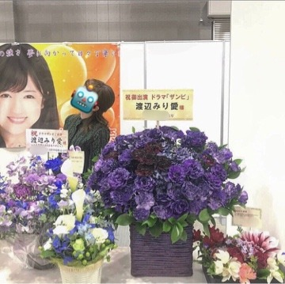

2019/0303Sun一意攻苦
バースデーライブ、
そして七瀬さんの卒業ライブ
無事4日間終了致しました！
沢山走って沢山考えて沢山踊って沢山歌って。
必死に、でも楽しく駆け抜けた4日間でした！

応援しに駆けつけて下さった皆様、
ライブビューイングや生配信で
見て下さっていた皆様、
お家や遠い所から応援して下さっていた皆様、
本当にありがとうございました(^ ^)
そして私達以上に身体を動かし、
寝る間も惜しんでライブを素敵なものに
作り上げて下さった全スタッフの皆様に
感謝しかありません。
ありがとうございました。

独特な雰囲気を持ってると言われる2期
私はその雰囲気が大好きなんだよなあ。
2期が他のユニットとか、選抜曲に出て踊ってる姿が
好きなんです。
そして私が参加させていただいた曲全ては
私にとって大切な曲ですし、
これからも大事にしていきたい！
風船は生きているで登場した時の
あの白いサイリウムの光景は忘れません。
ありがとうございました！
そして君は扇いでくれた
知ってる方の方が少ない気がするけど
アンダーアルバムに収録されている
私にとって大切な2曲目。
素敵な歌詞と曲調、
この歌に参加していないメンバーみんなも
この歌凄く好きなんだと言ってくれていて
素直に嬉しい。
イントロの始まり方が凄く好きなんです
幸せな空間でした！
そして生まれたままで
正直緊張気味でした。
センターを任された時、
嬉しくもあり、不安でもありました。
ファンの方から大事にされている曲だから
私で務まるか不安だったけれど、、
任せて頂いた事、嬉しく思います。
大好きな曲を披露できて良かった！
1期生から始まり、2期生3期生が加入、
そして4期生が加入し、
それぞれの期で色々な思い出、
辛かった事や楽しかった事が
あると思うけれど、
それでも全員で合わせて乃木坂46だから
このライブを通して思ったのは
メンバー全員でこれからも
乃木坂46を大きなものに
していきたいなと思いました。
卒業していくメンバーを見送るのは
寂しいけれど、、
卒業していったメンバー全員の
思いも背負ってみんなで坂を駆け上がりたい
いろいろなことが当たり前ではないから
日々の出来事に感謝をしながら
これからも活動していきたいです。
-------------
七瀬さんの卒業ライブ、
七瀬さんとっても綺麗でした。
七瀬さんのあの優しい笑顔を見る度、
これからもずっとその笑顔で
誰かを笑顔にしていくんだろうな。
私もそうなりたいなあって思いました。
本当にお疲れ様でした！
そしてみさ先輩も卒業を発表されましたね
みさ先輩には色々な事を教わったし、
緊張する現場に一緒にいてくれたし、
感謝する事ばかりです
お返しが出来ていないのが心残り、、
最後まで沢山笑って過ごせたらいいなあ。
あ！前々回の個別握手会の
渡辺を探せの正解は、


私が撮っていました〜。笑
いない、じゃなくて撮る側に回った。
なので、いないという答えは不正解です〜。笑
こちらが前回の。

素敵なお花、毎回本当に嬉しいです
ありがとうございます！！

みり愛
2019/03/03 20:12


コメント(501)
卒コンお疲れ様でした！
大好き！
なぁちゃん卒業寂しいけどみりあも負けてないよ！！
むねはってこれからも頑張れ！！
応援しとるー！
夏を思い出します
生まれたままで最高だったや！
また握手会いくからねー
これからどんどんああいう景色を見れる活躍を楽しみにしてる！
またのブログ更新楽しみにしてるよ！！
バースデーライブ4日間楽しませてもらいました！
生まれたままで、この曲がさらにさらに好きになりました。
これからも楽しみにしています！！
個人的なことになるけど
受験終わったよ(笑)
今度の握手会でお話できるようにネタ貯めとくね〜
またよろしくです！
バスラ4日間お疲れ様です ！！
おいしゃんの衣装めっちゃかわいい ！♡
2期生やっぱり大好きだー！！！
七瀬の卒業とみさ先輩とのラストライブもお疲れ様 ！
正直めっちゃ悲しいけど2人のことをずっと応援していこうかなって思ったよ。
あっ！5月の個握申し込んだから楽しみにしてるね ！
寒いから体調には気をつけてね (><)
ももんが
ほんとに二期生って素晴らしいなと改めて思いました☝︎
ボーダー組も成長した姿に涙なしでは見れなかったな
これからも活躍楽しみにしてますね
8年目もよろしくお願いします！
四日目のビューイングしか見れなかったけどそこでみり愛ちゃんがセンターやった時めっちゃ嬉しかったし感動しました！
これからもずっと応援してます！頑張れ！みり愛ちゃん！
バスラ 4日間お疲れ様ねっ。
確かに一番個性が強いのが2期生だなって思うよ。
だからこそ今でもしっかり「自分」を持ってるメンバー多いもんね。
生まれたままでめちゃめちゃかっこよかった！！！
撮ってるのを更に撮ってるのジワる(笑)
早く会いたい、、
バスラ 、卒コンお疲れ様！
ここにいる理由めっちゃ良かったよ！かっこよかった！
風船と君が扇いでくれた聞きたかったなー
コメント遅くなってごめんね。
生まれたままでのセンターびっくりしたけどまりかと仲が良かったみり愛だったからすごい納得できたし最高だったよ。
七瀬の卒コンも見に行けて良かった！
君僕凄い綺麗だったよね？
撮る側はずるいよw
また握手会でよろしくね。
帰り道もアルバムもあるから楽しみにしてる
かぶと
バスラお疲れ様でした！
2日目に行かせてもらったけど、やっぱり乃木坂のLIVEは何回行っても楽しいものでした。
2度目のキスからを聴けたのは嬉しかったなぁ〜！
あ、そう言えば4月のアルバムの個握取れたよ〜
大阪でまたみり愛と握手できるの楽しみにしてるね！
3日目ステージバックで見たんですけど風船は生きている最高でした。画面越しにみるみり愛ちゃんもかっこよくて素敵でした！
幕張の握手会当たったので楽しみにしてます！
久々にコメントする気がする。笑
別にサボったとかじゃないからね。うん。笑
ライブお疲れ様でした！！
行けなくてホントに悔しいので握手会行きまくります。
決して嫌な顔はしないでください。おじさん心が痛むんで。笑
めっちゃ久しぶりのコメントになっちゃった(⸝⸝o̴̶̷᷄ ·̭ o̴̶̷̥᷅⸝⸝)
卒コンバスラお疲れ様！！
受験生で少ししか見れなかったけどほんと可愛かったよ♡♡
あと少しでみり愛ちゃんに会えると思うとほんとに嬉しいです♡
1年ぶりだよ！！！ほんとに！！
もうあと少しで受験だからラストスパート頑張るね( ¨̮ )︎
もか
そして、バースデーライブお疲れ様！
直接は見れなかったけど画面越しで見ても輝いてたよ！
みりあが撮ってる側ならわかるはずがないww
早くみりあと握手したいよー！
バスラ卒コンお疲れ様！
君が扇いでくれた、私も大好きな曲です。
夏曲でありながらいつ聞いても爽やかな気持ちになれる隠れた名曲だと思っています！
みり愛さんその答えは反則じゃありません？笑
まぁ面白かったので良きです笑
いよかん
初日と2日目、卒コンをライビュで見ました。
「生まれたままで」は個人的に大好きな曲の一つなので、その曲でみり愛ちゃんがセンターしてるの見れて本当に嬉しかった…
4月28日のアルバム個握は今までで一番握手券取ったので、ちょっと古い話題にはなると思うけど、色々感想言わせてください！
本当に感動しました！ありがとう！
幕張あたったよーー
めっちゃ楽しみすぎてやばい！！！
次の更新待ってます
みり愛センターの生まれたままで見たかったな〜
バースデーライブ、3日目だけ行かせていただきました！
みり愛ちゃんがセンターに立った風船は生きていると、君が扇いでくれた、めちゃくちゃ良かったです。輝いてました。
やっぱり、みり愛ちゃんのダンスが好きだということを再確認することが出来ました！これからも、ずっと応援します！
また感想は、握手会の時に！
やはり、そっち側だったのか……、みり愛推しみんなどこ？って探してたから(笑)
3/17の握手会行かせていただきます！12/25の大阪以来で久しぶりですがよろしくお願いします！それではここで！
バースデーライブお疲れ様でした。
私は初日、2日目に現地で参戦しました！！
風船は生きている、がまさかの3日目で見れませんでした
まぁそんなこともあるよね...笑笑
どのパフォーマンスも良かったよ！
お疲れ様でした。
七瀬さんの卒業コンサートは地元の映画館からライブビューイングで見ました。
七瀬さん推しだったので、号泣で涙が止まりませんでした。。。
4期生も入った今の乃木坂をこれからも応援していきます！！
これからも応援しています。
でもまだまだ忙しいみたいやね！！ええ事や！！笑
君が扇いでくれた…歌詞が素敵でドキドキするよね(￣▽￣)
秋元さんの作詞の才能は本当にすごい！！小さな告白をクリアファイルや下敷きで例えるのは凄すぎる！！笑
まって…みり愛を探せ…マジで分からんって友達と話しよったのにwwwwそういうことか！！！！そんなん分かるわけないやん！！！！おい！！！笑笑
楽しませてもらったわ！！いつもモバメもありがとう！！忙しい時は無理して送らんでも大丈夫よ！！！
最後の写真大人っぽい！！カラコン？？
バスラ4日間本当にお疲れ様でした バスラ終わってからも忙しいみたいで、休める時はゆっくり休んでね。
バスラは生まれたままでのセンターだったり、インフル代打？でみり愛めっちゃ抜かれるし、風船も君が扇いでくれたも聞けたし楽しそうな姿もカッコいいみり愛もどっちも見られた気がする。風船の後の笑顔と深々としたお辞儀は忘れられないな〜
真夏の全国ツアー2019も決まったし、またみり愛のライブしてる姿見に行きたいな〜
バスラお疲れ様でした
これからも頑張って(/･ω･)/
最後の写真のみり愛の表情は珍しいなあ(*´ω｀*)
PS:先日の猫舌SHOWROOMもお疲れ様でした。ドイツから観てるは本当のことなの(｡>﹏<｡)今のコメントもドイツから書いてたよ
俺もみり愛の笑顔にいつも元気貰ってるよーありがとう
これからも頑張って
Liveで見るみり愛どんな時のみり愛よりも輝いてたよ！！
「君が扇いでくれた」めちゃくちゃ好きな曲なんだ！
また披露する時まで待ってるね！！
なかなかゆっくり休めないかもしれないけど時間見つけてからだ休めてください！！
みり愛ちゃんの風船大好きだー
生まれたままででのセンター本当にカッコよくて
その他の行けてないけど風船も君が扇いでくれたも見たかった！
初日にしたその先の出口めちゃくちゃ良かった！！
でも、前々回の渡辺を探せは難しすぎ！笑
また、個握もいきます！！
コメントする